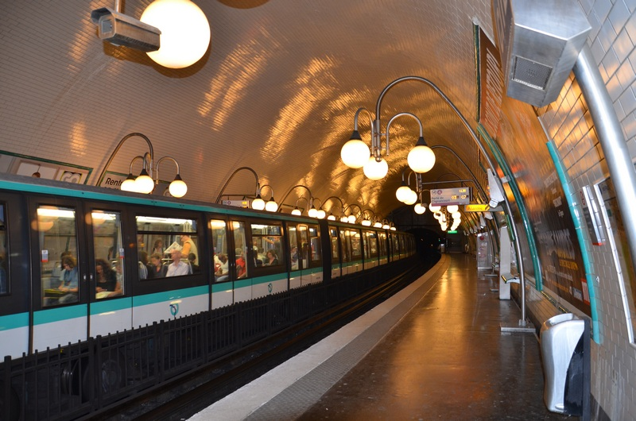
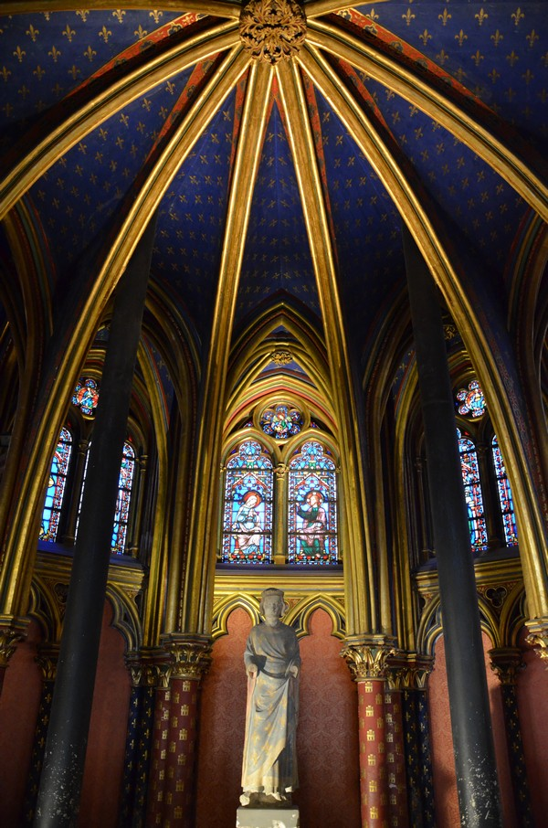
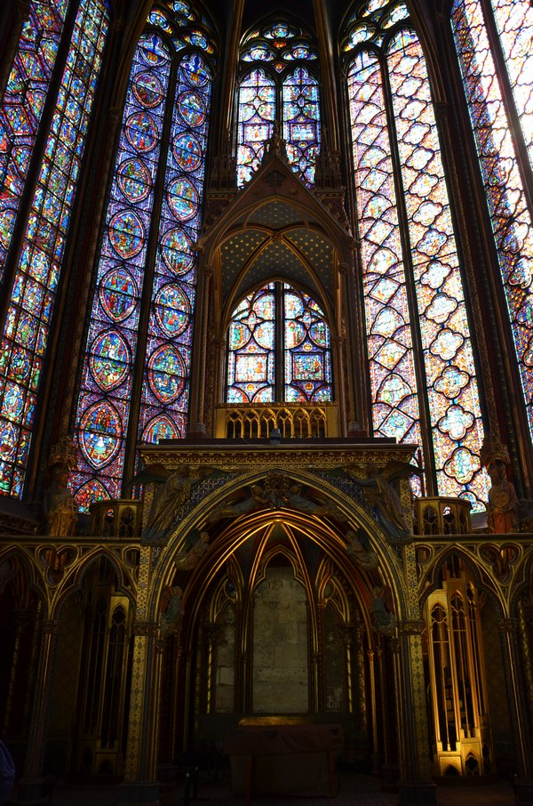
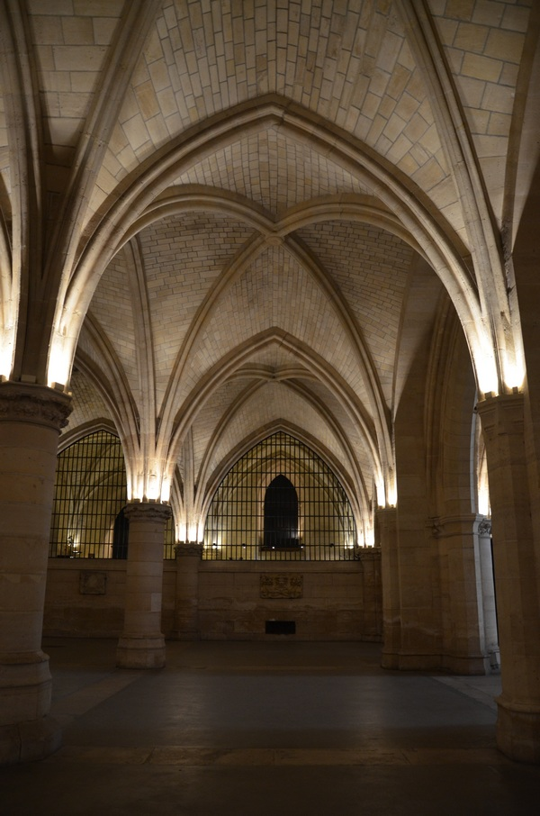
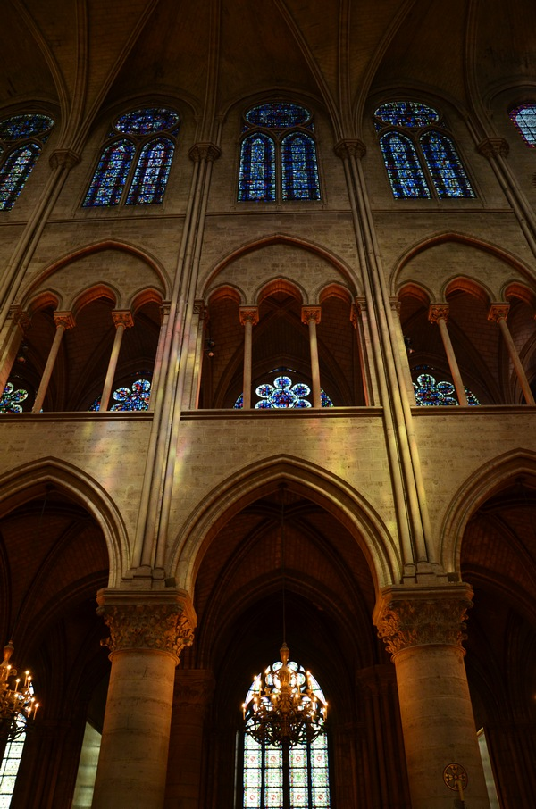
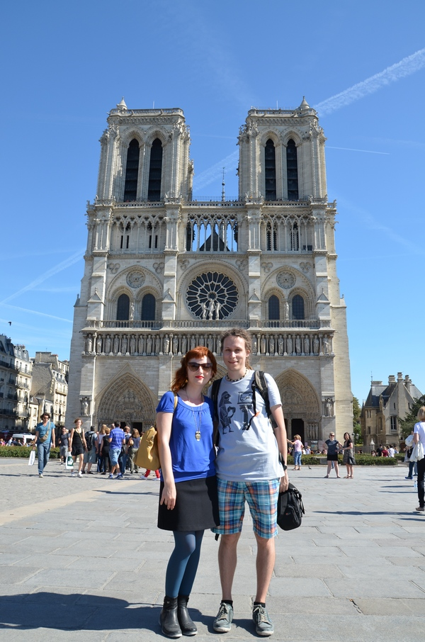

Na třetí den jsme si naplánovali návštěvu slavného chrámu Notre Dame a umělecké odpoledne v moderním centru Pompidou. Málem však pro nás celý den začal tragickou ztrátou :O. Na úvod vyprávění opět několik málo slov k pařížskému metru: Přestože z něj mám spíše pozitivní pocity, alespoň co se týče značení a celkově dobré orientace, samozřejmě bych našla i několik mínusů. Především je znát, že některé vlakové soupravy už hodně pamatují - jsou zastaralé, špinavé a nevzbuzují zkrátka moc důvěru. Jako větší problém bych však označila to, že metro jezdí dokonce i na můj vkus strašně rychle a na zastávkách bývá opravdu málo času na vystoupení, což bylo občas trochu stresující, zvlášť pokud byl vagón přeplněný lidmi. Přesně to se nám stalo i na zastávce Cité, kde jsme vystupovali toho dne. Doteď to nechápu, protože si vždycky kontrolujeme, jestli máme všechny věci, ale stalo se nám, že jsme při výstupu nechali na sedačce foťák, který jsme měli položený mezi sebou. Doslova na poslední chvíli, kdy už se zavíraly dveře vagónu, ho za námi vyhodila na perón dvojice Asiatek (aspoň myslím, všechno se to totiž semlelo strašně rychle). Byli jsme z toho všeho naprosto v šoku - jednak ochromeni zděšením, že jsme málem přišli o foťák, ale hlavně štěstím bez sebe, že to nakonec dobře dopadlo. Škoda, že jsme těm dobrým lidem ani nestihli poděkovat. Nejsem si úplně jistá, jestli by se nám něco takového stalo třeba v pražském metru…

Cité - osudná zastávka
Pořád ještě dost v šoku jsme se přemístili k první památce, Sainte-Chapelle, kde nás sice čekalo vystání poměrně dlouhé fronty, ale ten zážitek vevnitř stál rozhodně zato a pro mě osobně byla Sainte-Chapelle jedním z nejzajímavějších míst, která jsme v Paříži navštívili. Ve spodní kapli se nachází nejstarší nástěnná malba, jakou můžete v Paříži vidět. Horní kaple je zase unikátní svými překrásnými vitrážemi s výjevy z Bible.

Spodní kaple


Horní kaple
Naše další kroky vedly do sousední Conciergerie, někdejšího vězení, kde byla vězněna třeba Marie Antoinetta. Conciergerie není ničím zajímavé místo, a pokud budete mít v Paříži málo času, neuděláte chybu, když je vynecháte.

Conciergerie
Po procházce okolo ostrova jsme se konečně dostali až k chrámu Notre-Dame, který mě opět překvapil svou velikostí. Na fotkách všechny památky vypadají mnohem menší :-)! Fronta byla sice dlouhatánská, ale hýbala se rychle, takže než jsem stačila vykoumat, jestli je tu nějaké vstupné (a stejně jako u baziliky Sacre Coeur není, bo je to kostel, že :)), už jsme byli skoro vevnitř.


Notre-Dame
I Notre-Dame má působivý interiér a jeho atmosféru nenaruší ani davy turistů. Chrám je zkrátka tak veliký, že se v něm všichni rovnoměrně rozptýlí :-). Pod vlivem ranních událostí jsme se rozhodli zapálit svíčku pro naše neznámé přátele, kteří nám zachránili foťák :-)…

Poté, co jsme si prohlédli interiér a usoudili jsme , že frontu na věž se nám stát opravdu nechce, obešli jsme si pěkně celý chrám kolem dokola a poslechli si jednu z všudypřítomných pouličních kapel. Na hudebníky tady můžete natrefit opravdu kdekoliv - krom osvědčených turisty vyhledávaných památek třebas i v metru nebo přímo v RER vlaku ;-).

Po poslední sérii povinných fotek před chrámem jsme opustili ostrov Ile-de-la-Cité a vydali se najít si nějaké příjemné místo, kde bychom se mohli naobědvat. Nakonec jsme zvolili jeden podnik nedaleko centra Pompidou a rozhodli se vyzkoušet jejich polední menu neboli formuli. Zpočátku jsme úplně nepobrali, z kterých pokrmů z jídelníčku si vlastně můžeme vybrat. Teprve když nám začal číšník cosi vysvětlovat, všimla jsem si, že u některých jídel je v jídelním lístku hvězdička a to jsou právě ta, z kterých je možné si zvolit. Nakonec jsme si s Péťou objednali jako hlavní chod zeleninový salát s rybkou a 2 zákusky - já čokoládovou pěnu a Péťa nějakou kokosovou buchtu. Ty zákusky byly vyloženě obrovské a vynikající, takže si dokážete představit, že jsem byla v sedmém nebi O:-). Seděli jsme opět venku před kavárnou (hrozně se nám to zalíbilo) a pozorovali kolemjdoucí či kolemjedoucí Francouze a Francouzky. Všechny ty zvěsti o tom, jak jsou Francouzi elegantní, jsou naprostá pravda. Hrozně se mi líbili místní důchodci - babičky se třeba sotva vlečou, ale můžete vzít jed na to, že i tak budou mít sladěné boty s kabelkou :D. V neděli dopoledne jsme zase viděli partu dědečků, jak hrají v parku petanque - jednoduše kouzelné! Sladké jsou taky francouzské děti - zatímco my běhali zamlada v teplákách a vytahaném tričku, tady si malí chlapečci i na hřiště chodí hrát v košili a hezkých kalhotách a holčičky v šatech. Možná je to nepraktické, ale vypadá to tak strašně krásně :-)! Taky si myslíte, že svět by byl hned hezčí, kdyby všichni muži častěji nosili oblek? Pak vězte, že i pouhá potěcha oka je dobrým důvodem, proč jet do Paříže… ;-)

Notre-Dame a my
Chtěla jsem do tohoto článku zahrnout i vyprávění o návštěvě centra Pompidou, ale vidím, že když se rozvykládám, jsem k nezastavení, a tak to asi necháme zase na příště, ať vás moc neunavím :-).